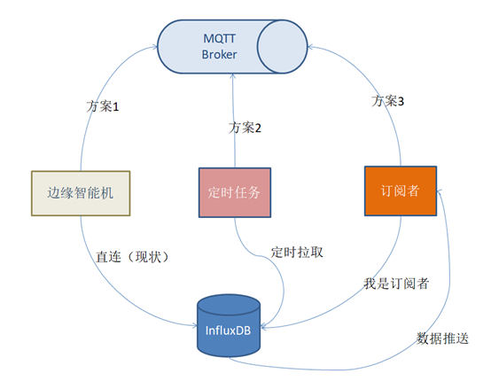
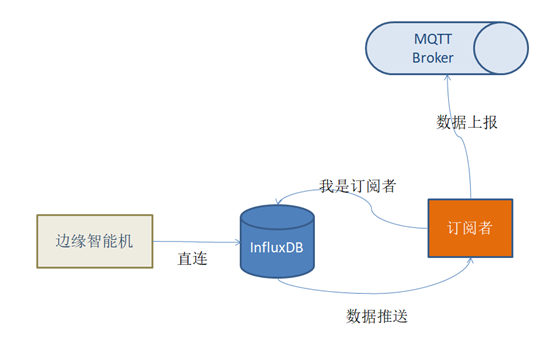
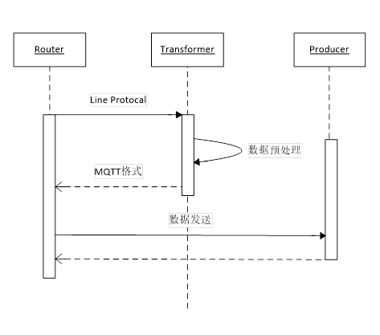

在边缘计算场景中数据存储在边缘的时序数据库如 InfluxDB 中，如果不能将数据进行归集以统筹管理则可能形成数据孤岛，无法充分有效的发挥大数据的威力。
边缘端的数据流是数采网关直连InfluxDB，通过restful的方式将采集到的数据发送到时序数据库。这种方式的优点是架构简单，没有中间环节数据传输效率高、实时性有保障。缺点则是可扩展性低，无法满足数据处理、数据转发等需求。
在某大型客户的案例中我们面临的挑战是边缘时序数据需要接入对方的工业互联网平台，鉴于平台支持MQTT方式接入，我们的问题就转化为：边缘时序数据发送到MQTT队列
方案设计
在分析了我们现在连接方式后我们总结出三种方案来应对挑战。

- 方案一，网关直接连接MQTT
- 方案二，定时任务去InfluxDB拉取后发送到MQTT
- 方案三，模拟一个InfluxDB的订阅者，作为中间层
综合来看方案一实现方式比较简单，直接由网关发起双写。缺点是对网关性能要求比较高，同样也面临后期扩展性的问题。
方案二和方案三都是通过增加一个中间层来解决问题，通过中间层可以实现数据预处理、数据分发等功能保留了扩展性。不同点在于方案二采用主动拉取的方式，方案三采用了订阅者模式由InfluxDB推送数据更新到订阅者。相比较而言方案三的实时性更好，性能损耗也相对更小。
最终我们选择方案三作为InfluxDB到MQTT的连接方案。

方案实现
我们从三个方面来依次阐述方案实现：
InfluxDB 设置
在InfluxDB设置中，订阅是默认开启的。如果已经关闭注意打开即可，配置项段落如下：
1
2
3
| [subscriber]
enable = true
|
在完成了配置后需要重启服务生效。然后通过执行语句创建subscription，完成订阅。
1
| CREATE SUBSCRIPTION "mysub" ON "test"."autogen" DESTINATIONS ALL 'http://192.168.8.181:9090'
|
其中 mysub 是订阅的名称，test 和 autogen 分别是数据库和保留策略的名称，http://192.168.8.181:9090 是订阅者地址，InfluxDB会将fork的请求发送到这个地址。
订阅者实现
订阅者实现是整个方案的核心，我们通过类图来说明。

Router是订阅者对外暴露的端点，通过receive方法接收请求后将请求流转到Transformer。
1
2
3
4
5
6
7
| @PostMapping("/write")
public Mono<String> receive(@RequestBody String data){
String mqttdata = transformer.transform(data);
gateway.sendToMqtt(mqttdata);
return Mono.empty();
}
|
Transformer将数据从InfluxDB的line protocol转换为平台接收的MQTT数据格式，通过MQTT客户端发送。
1
2
3
4
5
6
7
8
9
10
11
12
13
14
15
16
| public String transform(String lineData) {
RootCloudThing thing = new RootCloudThing();
String[] lines = lineData.split("\n");
List<RootCloudItem> items = Arrays.stream(lines)
.filter(line-> itemConfigure.isValidLine(line))
.map(RootCloudItem::buildFromLine).collect(Collectors.toList());
thing.setItems(items);
Map<String,List<RootCloudThing>> innerMap = new HashMap<>();
innerMap.put("things", Arrays.asList(thing));
Map<String,Object> outerMap = new HashMap<>();
outerMap.put("body", innerMap);
return new Gson().toJson(outerMap);
}
|
transform方法主要实现了line数据的过滤和向RootCloudThing对象的转换，最后以Json格式返回给Router用以发送到MQTT broker。
发送MQTT
我们基于eclipse paho作为MQTT的客户端实现，pom文件引入如下依赖。
1
2
3
4
| <dependency>
<groupId>org.springframework.integration</groupId>
<artifactId>spring-integration-mqtt</artifactId>
</dependency>
|
通过配置文件注入配置
1
2
3
4
5
|
mqtt.broker.uri=tcp://mqtt-broker-pre.rootcloudapp.com:1883
mqtt.broker.username=xxxxxxxx
mqtt.broker.passcode=xxxxxxxx
mqtt.broker.topic=v4/p/post/thing/live/json/1.1
|
通过ProducerConfigure类实现配置读取并初始化客户端bean
1
2
3
4
5
6
7
8
9
10
11
12
13
14
15
16
17
18
19
20
21
22
23
24
25
26
27
28
29
30
31
32
33
34
35
36
37
38
39
40
41
| @Configuration
@ConfigurationProperties(prefix = "mqtt.broker")
public class ProducerConfigure {
private String uri;
private String username;
private String passcode;
private String topic;
@Bean
public MqttPahoClientFactory mqttClientFactory() {
DefaultMqttPahoClientFactory factory = new DefaultMqttPahoClientFactory();
MqttConnectOptions options = new MqttConnectOptions();
options.setServerURIs(new String[] { uri });
options.setUserName(username);
options.setPassword(passcode.toCharArray());
options.setCleanSession(true);
factory.setConnectionOptions(options);
return factory;
}
@Bean
public MessageChannel mqttOutboundChannel() {
return new DirectChannel();
}
@Bean
@ServiceActivator(inputChannel = "mqttOutboundChannel")
public MessageHandler mqttOutbound() {
MqttPahoMessageHandler messageHandler = new MqttPahoMessageHandler(username, mqttClientFactory());
messageHandler.setAsync(true);
messageHandler.setDefaultTopic(topic);
return messageHandler;
}
@MessagingGateway(defaultRequestChannel = "mqttOutboundChannel")
public interface MyGateway {
void sendToMqtt(String data);
}
}
|
总结回顾
通过方案实现章节的三个步骤我们已经基本实现了一个用于订阅InfluxDB的中间层，反观实现原理和Canal（ https://github.com/alibaba/canal/ ） 有点类似。
通过中间层的引入，在网关直连到InfluxDB的已有方式不需要任何改动的前提下，我们实现了数据的预处理和分发。基于中间层我们可以将时序数据发送到任意目的地，满足数据归集、数据备份、数据展示和数据分析等多种需求。
附源代码地址（版本更新后可能和原文实现有差异）：https://gitee.com/luischen/databridge